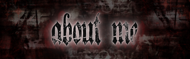
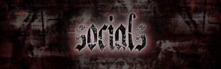
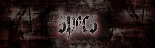
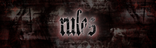
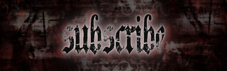
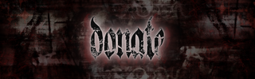
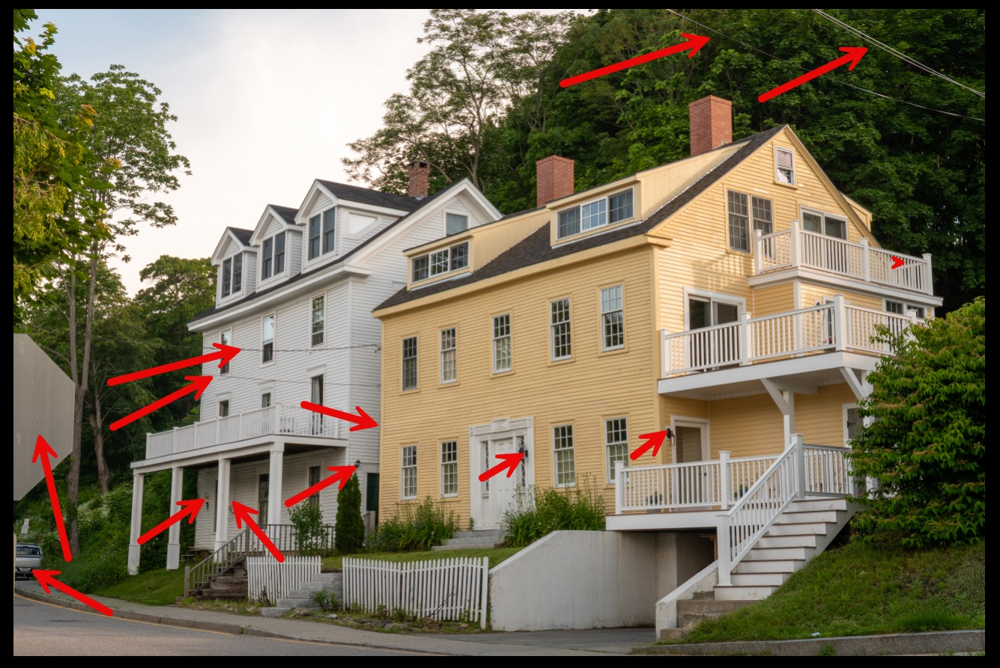

Portfolio Overview
A collection of creative design work showcasing my skills in digital and print media, including community flyers, custom Twitch panels, and photo editing. Projects highlight visual clarity, attention to detail, and effective communication through design.
Key Skills Demonstrated in These Projects
- Graphic design and layout
- Photo editing and enhancements
- Color theory and typography
- Digital workflow and file management
- Attention to detail and consistency
Flyer for KCFC - GEHS Blazers (March 2025)
I designed this flyer for the KCFC - GEHS Blazers, a non-profit football and cheer program where I volunteer as a cheer coach. The flyer was used at the start of the season to attract parents and kids interested in cheerleading or coaching. It’s a creative and engaging way to encourage participation and generate interest in the program.
Project Images
Tools & Skills Used
- Designed using Canva with provided KCFC images
- Created a clear call-to-action (CTA)
- Bold, spaced fonts for readability
- Used shapes and dividers to highlight important info
- Focused on team colors and logo for local representation
Twitch Panels for Streamer (November 2025)
I created this project for a streamer who needed custom panels for his Twitch account. These panels allow him to organize and share information with his viewers, answer common questions, and avoid repeating the same details every session.
Project Images






Tools & Skills Used
- Layered image design using Pinterest & Canva references
- 30 layers for each panel, including hidden text elements
- Color correction and visual effects
- Organizational layout for streaming panels
- Graphic design & digital workflow skills
Photoshop Markups (February 2026)
I completed a project where I edited a photo to remove unwanted objects and enhance it using brightness and contrast adjustments. This project demonstrates my attention to detail and basic photo editing skills in Photoshop.
Project Images


Tools & Skills Used
- Photoshop
- Remove Object Tool
- Brightness & Contrast adjustments